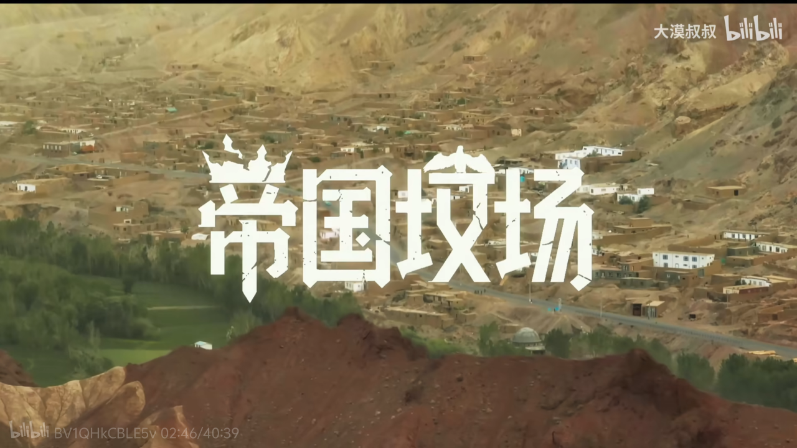
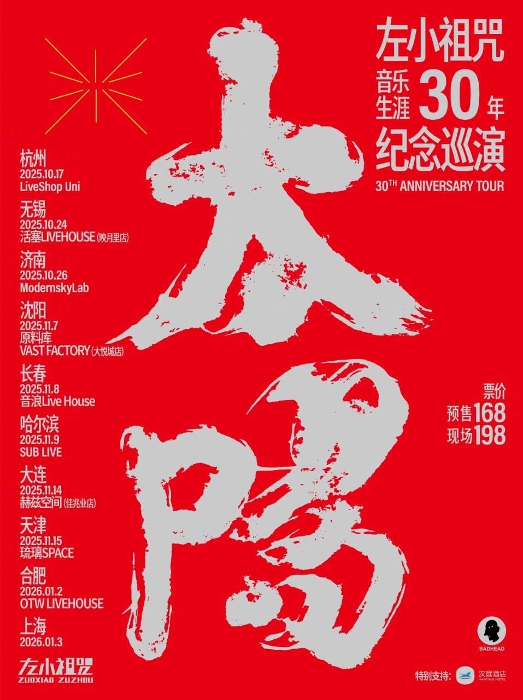

对照
现状 · 原版
你说「还不如这版」的基准
Noto Serif SC 700 · 近黑 #191919
问题：奶油纸底上偏扎眼，但结构是对的
廖智强 Archie
顶栏 nav
上一版 A/B/C（轻宋、霞鹜新致宋、站酷小薇）没有对齐你的参考图，已作废。
本页按 reference/字体1.png 与 reference/字体2.jpeg 重选字体路线；
英文 Archie 仍用 Playfair 斜体，正文不动。
· v6 Ref-4 字形狩猎（当前 · 刀隶+Noto900+源界/装甲/刻宋）
· v5 高对比宋（已收窄）
· v4 古意冲击（已搁置）
· v3 中英搭配（Noto/霞鹜/思源 · 已作废，太像正文宋）


Noto Serif SC 700 · 近黑 #191919
问题：奶油纸底上偏扎眼，但结构是对的
阿里妈妈刀隶体 · 机器学习爨宝子碑
隶楷方笔、三角折弯、朴茂倔犟 · SIL 免费商用
汇文明朝体 · 复刻 50–60 年代铅字印刷
暖墨 #5A4F44 · 老期刊 / 活字排印感
同汇文明朝体 + 横向压扁 scaleX(0.62)
复刻海报右侧那排刀刻活字标题的修长比例